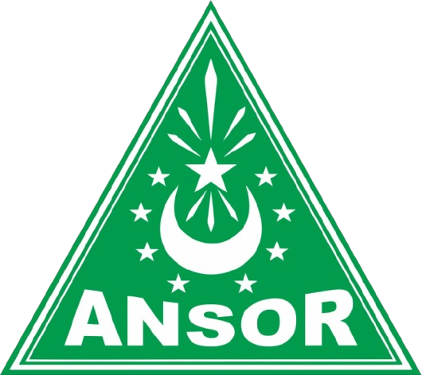

Pimpinan Cabang Gerakan Pemuda Ansor · Kabupaten Sleman
Kumpulan pedoman resmi untuk penyelenggaraan forum permusyawaratan di lingkungan Gerakan Pemuda Ansor. Unduh dokumen sesuai tingkatan forum yang akan dilaksanakan.
Tingkat Pimpinan Pusat · Peraturan Induk
Peraturan Pimpinan Pusat GP Ansor yang mengesahkan pedoman penyelenggaraan Konferensi Wilayah, Konferensi Cabang, Konferensi Anak Cabang, dan Musyawarah Anggota di seluruh tingkatan.
Tingkat Anak Cabang · Kecamatan
Tata tertib pengesahan Konferensi Anak Cabang Gerakan Pemuda Ansor tingkat kecamatan, sebagai forum permusyawaratan tertinggi di Pimpinan Anak Cabang.
Tingkat Ranting · Kelurahan / Desa
Tata tertib pengesahan Musyawarah Anggota Gerakan Pemuda Ansor tingkat kelurahan/desa, sebagai forum permusyawaratan tertinggi di Pimpinan Ranting.